Home · Mobile Welding
On-Site Mobile Welding in New Orleans
At Big Easy Mobile Welders, we bring the welding equipment and the expertise to your home or business in New Orleans. Our licensed, insured welders repair and build metalwork where it stands, so nothing has to be hauled to a shop.
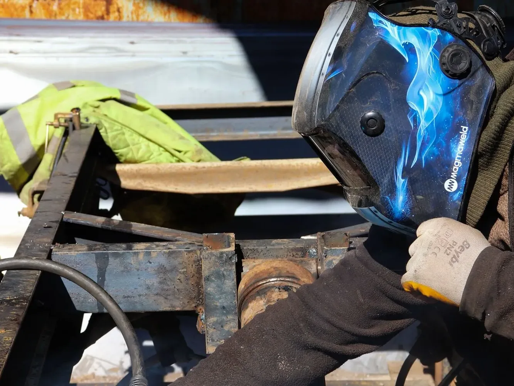
We come to the jobWhat Do Our On-Site Mobile Welding Services Include in New Orleans?
Every on-site mobile welding visit in New Orleans comes with a free estimate, a licensed and insured welder who drives a fully equipped mobile unit to your home or business, the welding process that suits your metal, clean prep and finishing, and a walkthrough when the job is done. You never have to haul the work to a shop.
Welding Where the Work Is
We bring the equipment and the expertise to your property, so heavy or fixed pieces get repaired where they stand.
Homes and Businesses
Houses, storefronts, job sites and production floors all get the same on-site service. No project is too big or too small for us.
The Right Process for the Metal
Between them, stick, MIG, flux-cored and TIG welding handle most metals and settings, and we choose the one your job calls for.
Many Metals Covered
We weld aluminum, stainless and mild steel, bronze and brass, the common metals that most often need repair.
Work Around Your Schedule
We plan the visit for a convenient time so the work disrupts your home or business as little as possible.
Safety on Every Job
We look after our team and everyone around the work area, from setup to the final cleanup.
Which On-Site Mobile Welding Services Cover Your Property in New Orleans?
Our on-site mobile welding services in New Orleans cover six kinds of work: pipe welding, fence welding, gate welding, iron railing welding, specialized mobile welding and window welding. Each one is done on site at your home or business by our licensed, insured welders, with everything carried to you in a fully equipped mobile unit.
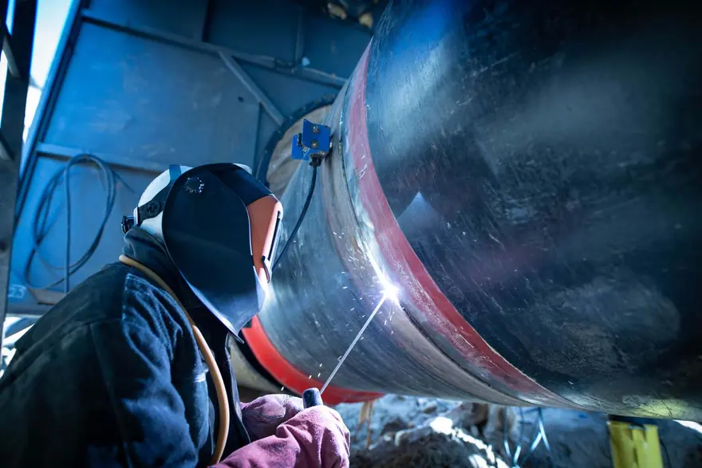
Pipe Welding
Pipe and pipeline repair on site, with stick and gas-shielded processes matched to the pipe.
View pipe welding →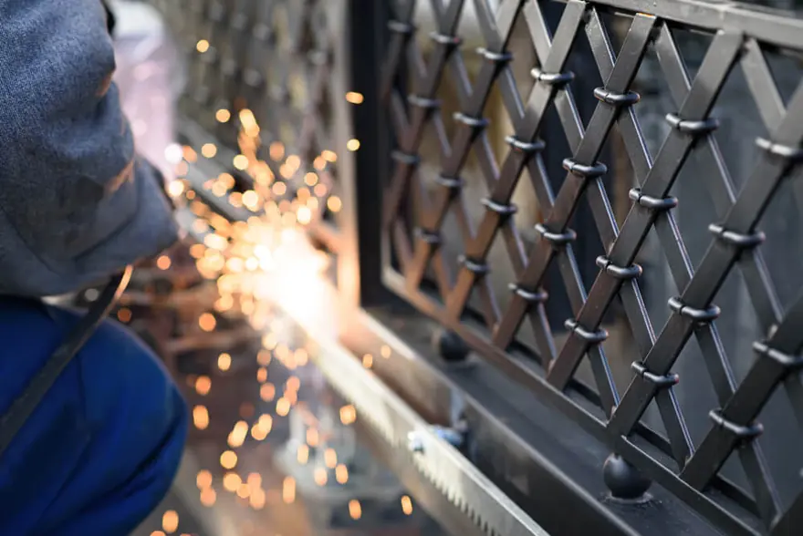
Fence Welding
Fence repairs and custom fence fabrication, with the material and process chosen for your fence.
View fence welding →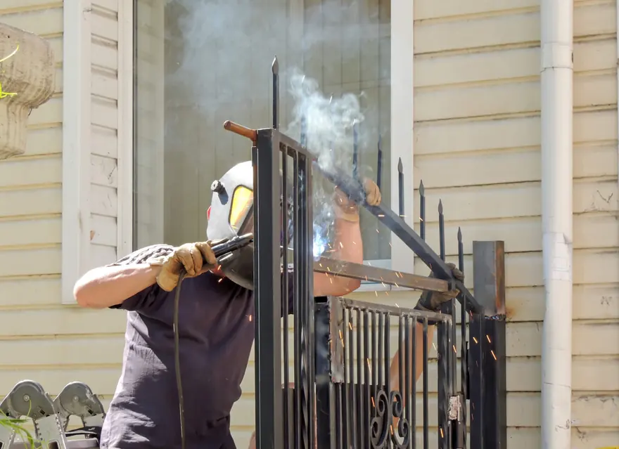
Gate Welding
Gate repairs and custom gates in steel or aluminum, with materials and tools covered in your estimate.
View gate welding →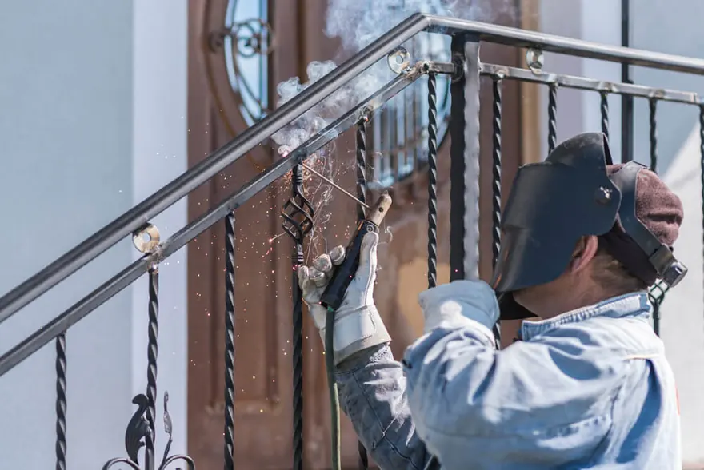
Iron Railing Welding
Custom indoor and outdoor railings for stairways, decks and balconies, built to fit your property.
View railing welding →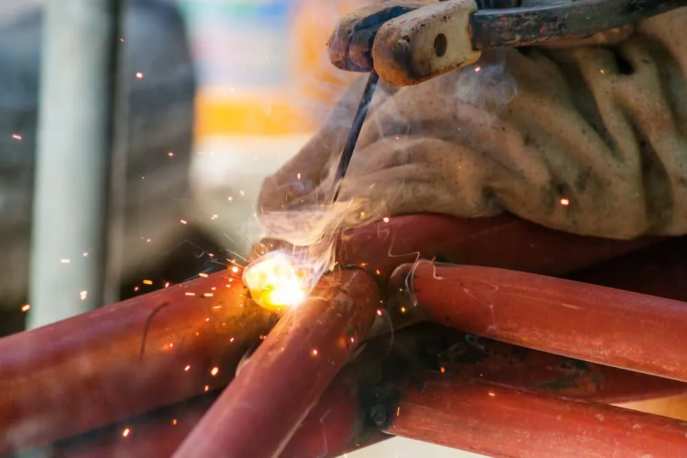
Specialized Mobile Welding
Repair work at your home or office and custom metal pieces, whatever the size of the project.
View specialized welding →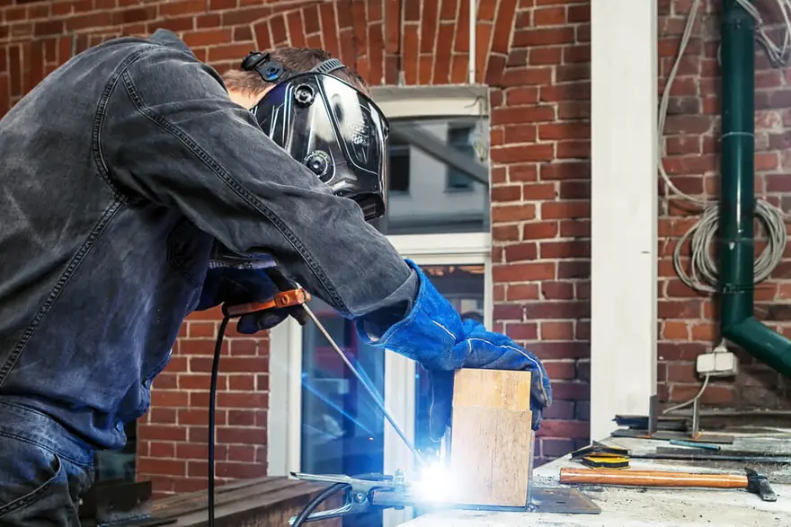
Window Welding
Repairs for rusted and worn metal window frames, carried out at your home.
View window welding →
Why Choose Mobile Welding Instead of Hauling Metal to a Shop in New Orleans?
Mobile welding in New Orleans saves you from loading heavy or awkward metal, hauling it across town and waiting on a shop. The welder comes to the gate, railing, equipment or structure where it stands, which suits fixed pieces that cannot move and keeps your home or business running while the repair happens.
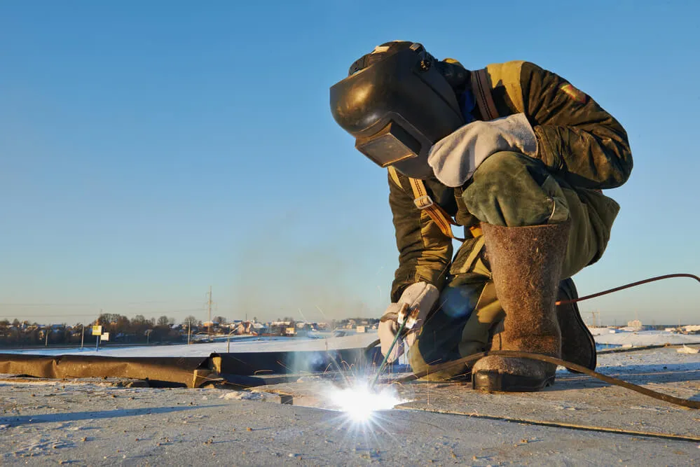
Plenty of the metal that needs welding cannot go anywhere.
Fences, gates, railings and structural steel are fixed in place, and broken equipment is often too heavy to move. Welding on site skips the hauling, the shop queue and the trip back.
Waterfront property brings its own demands, with salt air and moisture working on every joint. Our article on marine and dockside welding explains how waterfront structures are kept strong.
Which Equipment, Trailer and Structural Jobs Suit On-Site Mobile Welding in New Orleans?
On-site mobile welding in New Orleans handles equipment repair, fleet and trailer repair, and structural repair and installation, on top of fences, gates, railings and pipe. We weld cracked and broken steel equipment, fix vehicle frames and axles, and repair or install structural steel at your location instead of in a shop.
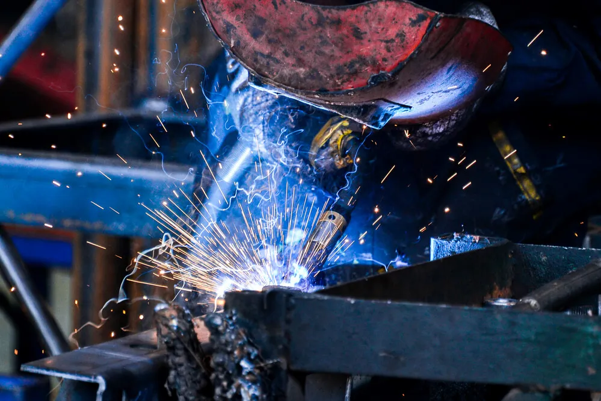
Equipment Repair
When equipment breaks, production and efficiency suffer. We repair cracked and broken equipment made of any steel that can be welded, so you can get back to work.
Fleet and Trailer Repair
A truck or trailer that is out of service costs you earnings. We fix broken perches on an axle and cracked frames, and we add load-locking equipment where the vehicle is parked.
Structural Repair and Installation
When a workplace or production space needs structural steel repaired or installed, on-site welding is a cost-effective fix. We work with steel, aluminum, nickel and other alloys.
What Happens During an On-Site Mobile Welding Visit in New Orleans?
An on-site mobile welding visit in New Orleans begins once you request a free quote by phone or online and we agree on a time that fits your day. Our welder arrives with the mobile unit and completes the work where the metal stands, then goes over the finished weld with you, with easy payment options and follow-up support.
Request Your Free Quote
Call or send the estimate form with what needs welding, the metal and where it is.
Choose a Convenient Time
We arrange the visit around your schedule to keep disruption low.
We Arrive Ready to Weld
Our welder brings the machine, tools and safety gear, preps the metal with brushes and grinders, and makes the weld.
Final Walkthrough
We show you the finished work, offer easy payment options and provide follow-up support.
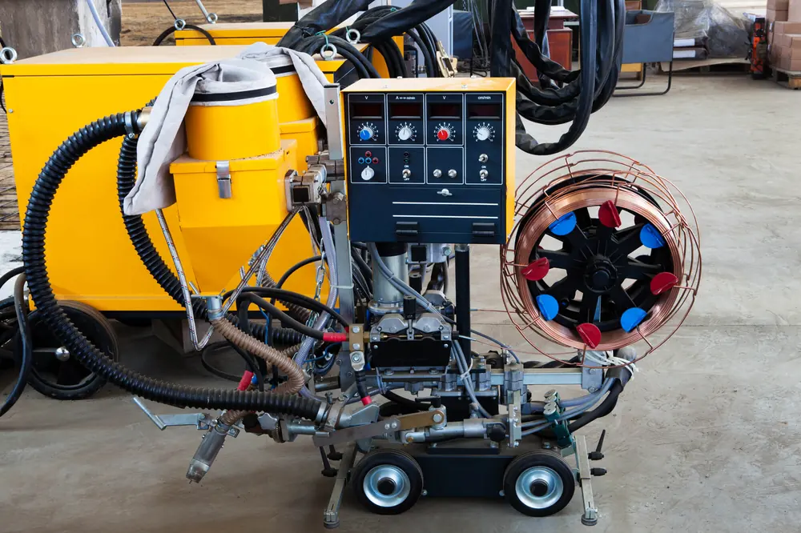
The rig comes to you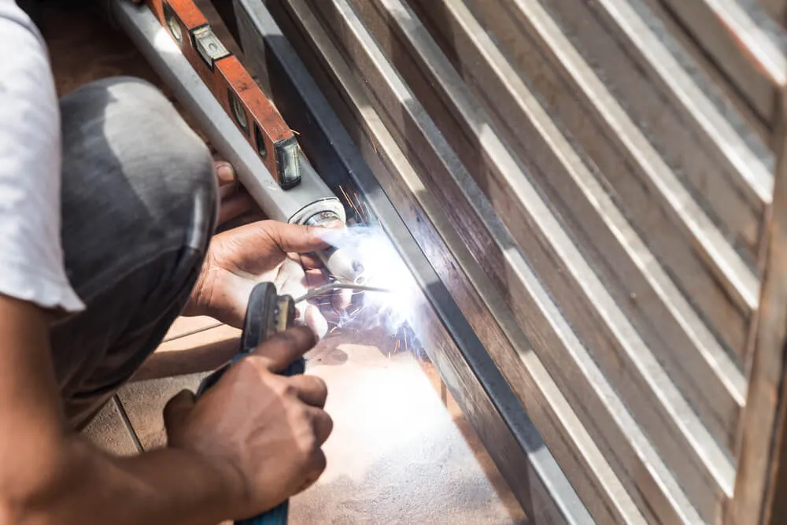
What Sets the Cost of Mobile Welding at Your Site in New Orleans?
The cost of mobile welding in New Orleans depends on the metal and its thickness, how much welding the job needs, how easy the work is to reach, and whether it is a repair or new fabrication. We see the job first and give a free, no-obligation quote with transparent pricing and no hidden fees.
Metal and Thickness
Aluminum, stainless and thick steel can call for a different process, more filler and more time than thin mild steel.
Size of the Job
One cracked bracket is quicker work than a long fence run or a full trailer frame.
Access on Site
Work at ground level goes faster than welding overhead, on a roof or in a tight space.
Repair or Fabrication
Fixing what you have and building new parts from raw stock are priced differently.
What Should You Prepare Before Our Mobile Welding Visit in New Orleans?
Before mobile welding starts in New Orleans, clear the area around the work, move anything flammable away, and make sure the welder can park the mobile unit nearby. Businesses should also check whether the site needs a hot work permit. Good preparation keeps the visit safe and lets the welding begin promptly.
A Clear, Safe Work Area
Move vehicles, furniture and anything that can burn away from the spot. Sparks can travel well beyond the weld, so a wide clear zone matters.
Permits on Commercial Sites
Commercial jobs may need a hot work permit and a fire watch before welding begins. Our guide to hot work permits and fire watch covers what to expect.
Parking and Details
Tell us about gates, driveways and pets so we can park close and set up quickly. Photos of the damage and the metal type help us bring the right filler.
How Do Customers Rate Our On-Site Mobile Welding in New Orleans?
Reviews of our on-site mobile welding in New Orleans mention iron railings, gates, and jobs at homes and businesses, and one customer recommends us for property and vehicle work. Customers point to fair prices, quick turnarounds and top-notch workmanship from a team that comes to them with a fully equipped mobile unit.
Big Easy Mobile Welders provide quality welding work at a reasonable price. They have been reliable and quick to respond whenever I've needed them, which has made it easy for me as their customer!
The guys from Big Easy Mobile Welders were great! They came to my house and welded two iron railings with a quick turnaround time, which was just what I needed. The quality of workmanship is top notch which made me a satisfied customer! If you need anything welded then these guys will be able to help out big time.
I can't recommend Big Easy Mobile Welders enough! They helped me out of a jam by welding our gate, and their work is amazing. The fast service combined with great quality made all the difference in getting things done quickly without any hassle for me. Thanks again, guys!
If you need a welder for any type of job, I highly recommend Big Easy Mobile Welders. The team did an amazing job on my home and business! They were professional from start to finish. Thankful that their work could help me get back up and running again sooner than expected.
I had the pleasure of working with Big Easy Mobile Welders this past week. They are not only professional and skilled, but also very affordable! I highly recommend them for any welding job you may need done on your property or vehicle. You won't regret using these guys as they do amazing work at a fair price 10/10 would do again!
How Do You Book a Free On-Site Mobile Welding Estimate in New Orleans?
Booking a free on-site mobile welding estimate in New Orleans takes our online form or a call to (504) 370-2757 during business hours, Monday to Friday, 8 AM to 3 PM. Describe what needs welding and where it is, and we will reply with a no-obligation quote that carries no hidden fees.
Loading the estimate form...
If it does not appear, call us at (504) 370-2757.
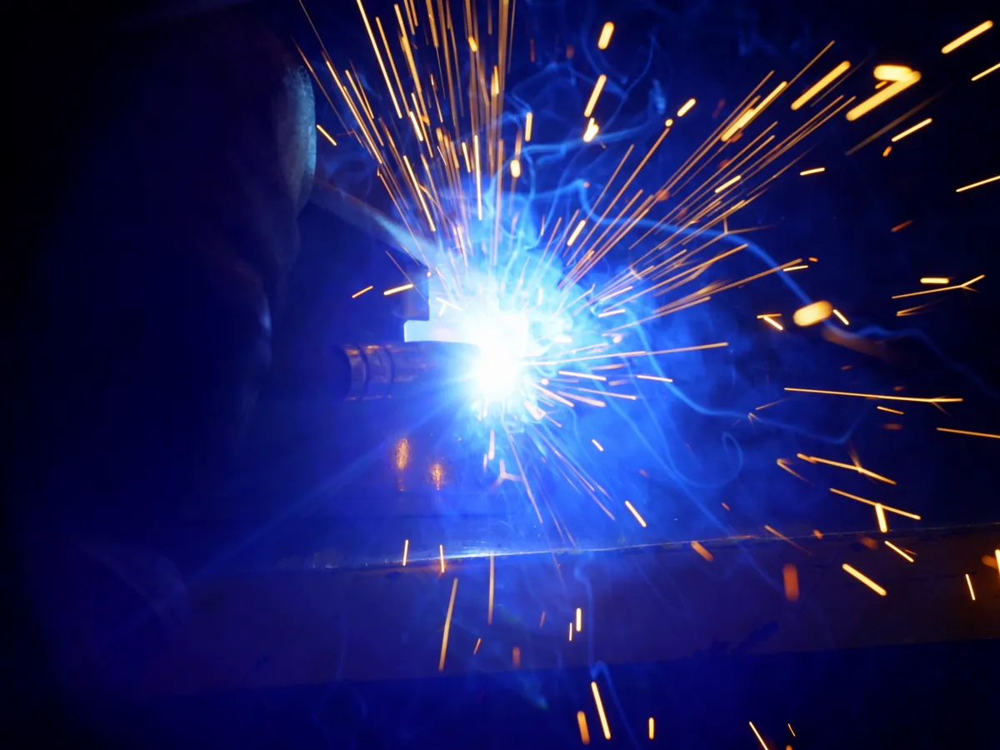
What Do People Ask About On-Site Mobile Welding in New Orleans?
The mobile welding questions New Orleans property owners ask most cover what mobile welding is, what a mobile welder brings, whether power is needed on site, which metals a rig can handle, whether trailers can be fixed, whether welding can go ahead in the rain, what the risks are and how commercial sites work.
What is mobile welding?
Mobile welding is welding done at the customer's location instead of in a shop. The welder drives a truck or trailer carrying the welding machine, tools and supplies to the job, then repairs or builds the metalwork where it stands. It suits fixed structures and heavy pieces that are hard to move.
What does a mobile welder need?
A mobile welder needs a welding machine, often an engine-driven welder that doubles as a generator, plus leads, electrodes or wire, and shielding gas for some processes. Grinders, brushes, clamps and cutting tools handle prep, while a helmet, gloves, jacket and fire extinguisher cover safety on site.
Do mobile welders need electricity at the job site?
Usually not. Many mobile welding rigs use an engine-driven welder that makes its own power, so the welder can work at a fence line, a dock or an open lot with no outlet nearby. Some smaller jobs may use site power when it is available, and we confirm what is needed during the estimate.
Can a mobile welder work in the rain?
Welding in the rain is unsafe because water conducts electricity and can carry current from the work to the welder, and moisture can also weaken the weld. A mobile welder usually waits for the rain to pass or works under solid cover, with the metal and the ground around it kept dry.
What metals can a mobile welder weld?
A mobile welder can weld most common metals with the right process and filler. We work with aluminum, stainless and mild steel, bronze and brass, along with nickel and other alloys. Each metal needs its own settings and filler, so we confirm the material before the visit.
Can a mobile welder fix a trailer frame?
Yes, a mobile welder can repair cracked trailer frames and broken spring perches on an axle where the trailer is parked. The cracked area is cleaned, ground out and welded, and a plate may be added for strength. Severe frame damage may call for replacing a section rather than patching it.
What are the risks of mobile welding?
The main risks of mobile welding are fire from sparks, burns, eye damage from arc light and breathing welding fumes. Working outdoors adds wind, wet ground and bystanders to think about. Trained welders reduce these risks with protective gear, a cleared work zone, ventilation and a fire extinguisher kept close to the work.
Can mobile welders work on commercial sites?
Yes. We weld at businesses as well as homes, including equipment repair, structural steel repair and installation, and fleet repairs. Commercial jobs may need a hot work permit and a fire watch, so we talk through site rules, access and timing with you before the visit to keep work moving safely.
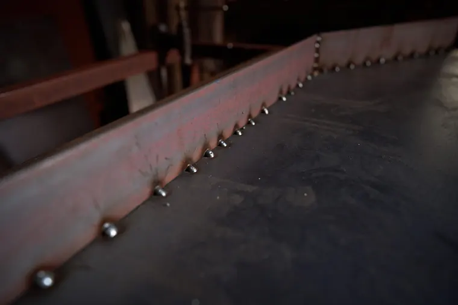
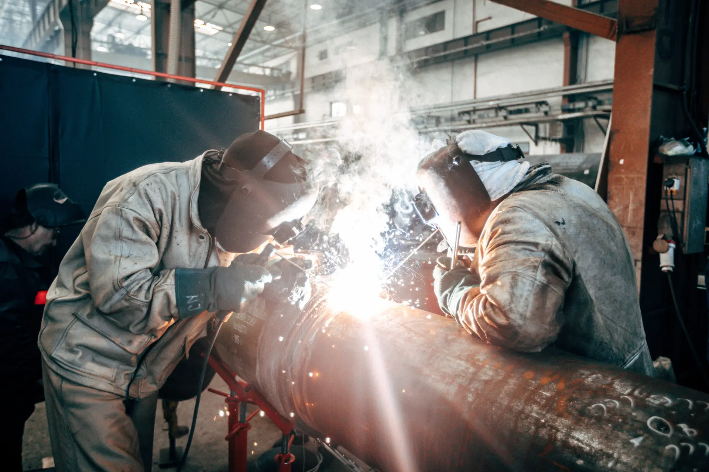
Book Your Free Mobile Welding Estimate
Tell us what needs welding, and we will bring the rig to your door anywhere in the New Orleans area.